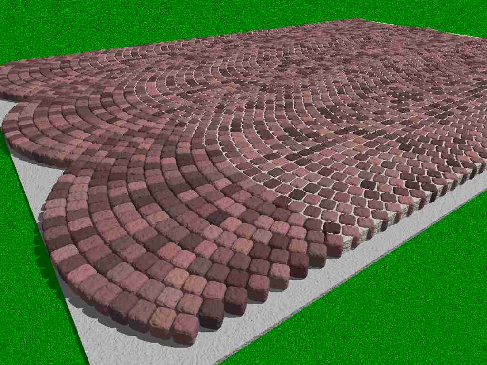

POV-Ray Object Collection
|
|
Overview Examples Macros Variables |
|
| 
|
The sample scene file 'curvedpaving.pov' contains plenty of examples showing the use of the various options and settings available with these macros. These examples are described and illustrated below.
The default settings produce a 0.1 unit thick layer of paving stones about 1.4 POV-Ray unit wide, but it's easy to override the defaults with the settings described (see Variables below).
The top surface of the generated object is aligned with the XZ plane (at a height of y=0). The object is centred on the Z axis and heads away from the origin in the +Z direction. From here the generated object can be translated (or rotated) in the normal way. The macros set certain values that can be extremely useful when positioning/aligning sets of blocks, as demonstrated in a number of the examples below.
The "bogen" style of paving became popular in many European cities with the advent of horse-drawn wagons as the regular interlocking structure proved extremely resilient and efficient at distributing heavy loads down into the bedding material. They are however complex and expensive to lay as blocks at the outer reaches of the arc need to be smaller than those at the centre.
| Example=1; Aligning Sections | |
|---|---|
|
Example 1 renders three copies of the default slab (extended to include 60 rows of blocks) side by side.
#declare CurvedPaving_Rows = 60;
#declare Section = CurvedPaving("") object {Section} object {Section translate CurvedPaving_CentreToCentre*x} object {Section translate -CurvedPaving_CentreToCentre*x} This example illustrates how the variable 'CurvedPaving_CentreToCentre' (which is set by the 'CurvedPaving' macro) can be used to translate blocks to the left or right. The sections are designed to fit together when translated in this way. You can also add separate runs of block together end to end by simply translating in Z by the product of the depth of the block and the number of rows of blocks (CurvedPaving_BlockDepth * CurvedPaving_Rows). If you don't set a control variable the 'CurvedPaving' macro sets a default value that you can subsequently access in your scene. This example illustrates this by using the 'CurvedPaving_BlockThickness' variable to align the top of the foundations with the bottom of the blocks and to make sure that the plane used to define the grass is below the foundations. If you change settings between calls to the 'CurvedPaving' macro and you want to use values that are calculated by the macro, then you should keep a copy of those values as illustrated in example 6. That example joins together 3 panels generated using different radii. | |
| Example=5; Roundness | |
|---|---|
|
Example 5 illustrates how the roundness setting (CurvedPaving_BlockRoundness) affects the block shape.
#declare CurvedPaving_Radius = 0.5;
object {CurvedPaving("")} #declare CurvedPaving_BlockRoundness = 0.8; object {CurvedPaving("") translate -CurvedPaving_CentreToCentre*x} #declare CurvedPaving_BlockRoundness = 0; #declare CurvedPaving_MortarGap = 0.01; object {CurvedPaving("") translate CurvedPaving_CentreToCentre*x} This setting only works with the default Superellipsoid blocks. If you specify "Box" or "Polygon" this setting has no affect. The central block uses the default setting which sets roundness to 0.4. The left hand block uses a roundness setting of 0.8 to give a more cobbled effect. The right hand block uses a roundness setting of 0 to give completely square blocks. In this case the mortar gap (CurvedPaving_MortarGap) is increased to 0.01 to give a 1cm gap. | |
| Example=6; Radius Setting | |
|---|---|
|
Example 6 provides a slightly more complex example to illustrate how to join sections of blockwork together when the radius of adjacent sections is different. Most real-world examples use a consistent radius for an entire paved area, but not all.
#declare CurvedPaving_Radius = 0.5;
#declare CurvedPaving_MortarGap = 0.0008; #declare Paving1 = CurvedPaving("") #local C2C1 = CurvedPaving_CentreToCentre; #local MinZ1 = z*min_extent(Paving1); object {Paving1 translate -MinZ1} #declare CurvedPaving_Radius = 1; #declare CurvedPaving_MortarGap = 0.004; #declare Paving2 = CurvedPaving("") #local C2C2 = CurvedPaving_CentreToCentre; #local MinZ2 = z*min_extent(Paving2); object {Paving2 translate -x*(C2C1+C2C2)/2-MinZ2} #declare CurvedPaving_Radius = 2.5; #declare CurvedPaving_MortarGap = 0.006; #declare Paving3 = CurvedPaving("") #local C2C3 = CurvedPaving_CentreToCentre; #local MinZ3 = z*min_extent(Paving3); object {Paving3 translate x*(C2C1+C2C3)/2-MinZ3} As with example 2 you can use the 'CurvedPaving_CentreToCentre' variable, which is calculated by the 'CurvedPaving' macro, but this is recalculated with each call to the 'CurvedPaving' macro, so this example keeps a record of the value before calling the macro again. The actual centre to centre distance can then be calculated by taking half the centre to centre distance from one call plus half the centre to centre distance from the other. Alignment of the 'seams' in the Z direction uses the standard POV-Ray function 'min_extent' to find the minimum extent of each section of blocks. It translates each section in -Z by that amount so that all 3 sections line up on the x-axis. | |
| Example=7; Cutting to Shape | |
|---|---|
|
Example 7 renders two sections, sliced square using a CSG (Constructive Solid Geometry) intersection operation.
#declare CurvedPaving_Rows = 60;
intersection { union { object {CurvedPaving("") translate -x*CurvedPaving_CentreToCentre/2} object {CurvedPaving("") translate x*CurvedPaving_CentreToCentre/2} } box {<-0.67,-0.2,1><0.67,0.01,6> texture {CurvedPaving_ThisBlockTexture}} } Most of the time when you want to add paving to a scene you want to apply it to an area with a very specific shape. In this example the shape is defined by creating a box that delimits the required section of paving. The POV-Ray 'intersection' operation is used to slice away everything that's outside the box. Exactly the same technique can be used with more complex shapes built using CSG operations or with prism objects constructed from a spline. Various free utilities like the Spilin spline editor and the Inkscape SVG editor enable you to draw spline-based shapes and generate POV-Ray prism objects from those splines if you need to create really complex shapes. Unfortunately, the cutaway_textures keyword doesn't work very well with complex CSG shapes, so in this example the texture 'CurvedPaving_ThisBlockTexture' is used with the cutting object and is therefore visible on the cut surfaces. This is actually the texture of the last block that was rendered, so it may not look right if you are using a more varied color range, but for most mottled blocks it should be quite a difficult defect to spot. It's obviously only something you need to worry about if the cut surface is visible, which is not always the case. In this example the default normal and finish (as defined by the 'CurvedPaving' macro) are used to cut the ends of the otherwise smooth borders to the path and to give a texture to the mortar. | |
| Example=8; Alternative Block Objects | |
|---|---|
|
Example 8 uses basically the same code as example 7 to render a section of footpath, but specifies the two alternative objects currently available for the two sections of pavement.
object {CurvedPaving("Polygon") translate -x*CurvedPaving_CentreToCentre/2}
object {CurvedPaving("Box") translate x*CurvedPaving_CentreToCentre/2} The 'CurvedPaving_Block' macro is designed to make it easy to add new predefined block styles and one of the style options is to change the object from the default superellipsoid to an alternative object, such as a "Box" object or a "Polygon" object. The example on the left uses the style parameter on the 'CurvedPaving' macro call to specify the "Polygon" object which creates wedge shaped polygons (with zero thickness). The example on the right uses a "Box" object, which is equivalent to a superellipsoid with no roundness. Both take slightly less time to render, but primarily illustrate the technique by which other shapes can be added. The available object styles are:
| |
| Example=10; Adjusting for Different Lighting Levels | |
|---|---|
|
Example 10 illustrates the use of brightness to adjust for alternative lighting levels. Different scene files can use very different lighting levels. The brightness setting allows you to compensate for this.
The image on the left was rendered with the default settings and a single full intensity light source. The central image shows bleaching caused by color saturation when ten times as much light is added to the scene. The image on the right is generated with:
#declare CurvedPaving_Brightness = 0.1;
object {CurvedPaving("")} to redress the balance. The 'CurvedPaving_Brightness' variable is simply used as a multiplication factor for the color when the macro defines the block texture. It can therefore be used to counteract lighting variations from one scene to another. | |
| CurvedPaving macro | |||
|---|---|---|---|
|
You call the CurvedPaving macro to create a section of paving. This is normally the only macro you need to call. The functionality is controlled through a series of variables, each of which has a default value, so you can generate the default section of paving with the following code:
camera {orthographic location <0,2.8,1.74> look_at 1.75*z } light_source {<-10,20,-5>, rgb 1} #include "curvedpaving.inc" CurvedPaving("") The CurvedPaving_Block macro has 1 parameter:
| |||
| CurvedPaving_ArcOfBlocks macro | |||
|---|---|---|---|
|
The CurvedPaving_ArcOfBlocks macro is used to create an arc of blocks based upon the specified settings. This macro is repeatedly called by the 'CurvedPaving' macro to create a series if adjacent arcs. This macro calls the 'CurvedPaving_Block' macro to draw each block.
You won't normally need to invoke this macro directly. It is called indirectly via the 'CurvedPaving' macro. The CurvedPaving_Block macro has 1 parameter:
| |||
| CurvedPaving_Block macro | |||||||||||
|---|---|---|---|---|---|---|---|---|---|---|---|
|
The CurvedPaving_Block macro is used to create an individual block based upon the specified settings. This macro is called repeatedly by the 'CurvedPaving_ArcOfBlocks' macro to draw each of the blocks that go to make up an arc.
You won't normally need to invoke this macro directly if you are using the 'CurvedPaving' macro because this macro is called indirectly from that macro. However, you may wish to create a macro of your own that defines a different pattern, in which case you can call this macro to draw the individual blocks. The CurvedPaving_Block macro can easily be tailored to add 'predefined' colors or shapes to those supplied. You can do this by adding a new '#case' clause to one of the two '#switch' statements. This usually only involves adding a couple of lines using basic coding elements, such as declarations of colors etc. and subsequently enables you to refer to your new style of block by name whenever you wish to use it in the future. The CurvedPaving_Block macro has 5 parameters:
| |||||||||||
| Variable | Description |
|---|---|
| CurvedPaving_Radius | Decimal value used by the CurvedPaving macro to control the radius of the arcs of blocks that make up the section of paving. The default value is 1 POV-Ray unit and is intended to represent a distance of 1 metre. The centre of the first arc of blocks will start this distance along the +Z axis from the origin. |
| CurvedPaving_BlockDepth | Decimal value used by the CurvedPaving macro to control the horizontal dimensions of the blocks. This is actually the distance along the +Z axis from one arc of blocks to the next. The default value is 0.1 POV-Ray unit and is intended to represent a distance of 10 centimetres, giving 10 rows of blocks per metre at the centre of the arc. |
| CurvedPaving_Rows | Integer value used by the CurvedPaving macro to control the number of rows of blocks to generate. The default value is 20 which give 20 rows/arcs of blocks. |
| CurvedPaving_MortarGap | Decimal value used by the CurvedPaving macro to control the average space between blocks. The generated blocks are defined to fit into the space calculated using the 'CurvedPaving_BlockDepth' setting with half this gap all around them. The default value is 0.0001 which represents 0.01mm to produce blocks that butt right up against each other. Because the Superellipsoid shape is usually used to generate rounded blocks, the space available for mortar will actually appear to be substantially larger. If you use the "Box" or "Polygon" shapes you should increase this value to about 0.01 to give a 1cm gap because these shapes don't have rounded edges (see example 8). |
| CurvedPaving_BlockThickness | Decimal value used by the CurvedPaving macro to control the thickness of the blocks. The default value is 0.08 which represents 8cm from the top surface to the bottom surface. |
| CurvedPaving_BlockRoundness | Decimal value between 0 and 1 used by the CurvedPaving macro to control the roundness of the blocks. The default value is 0.4 which produces a block with a distinctly rounded edge. A value of 0 gives square edges and 1 makes the blocks spherical. |
| CurvedPaving_MinColor | 3D RGB color vector used by the CurvedPaving macro to control the selection of colors. This vector provides the minimum red, green and blue values. The default value is <0.6,0.3,0.3> which makes the minimum color a dark red. Each color element is generated independently, so a minimum of <0,0,0> with a maximum of <1,1,1> will permit any valid color to be selected. See example 2 for an illustration of this setting. |
| CurvedPaving_MaxColor | 3D RGB color vector used by the CurvedPaving macro to control the selection of colors. This vector provides the maximum red, green and blue values. The default value is <0.75,0.35,0.35> which makes the maximum color a medium red. Each color element is generated independently, so a minimum of <0,0,0> with a maximum of <1,1,1> will permit any valid color to be selected.See example 2 for an illustration of this setting. |
| CurvedPaving_Contrast |
Decimal value between 0 and 1 used by the CurvedPaving macro to control the degree by which randomly selected colors can be randomnly darkened. The default value is 0.8 which results in each generated color value being multiplied by a random factor between 1 and 0.5. A setting of 0 results in the colors being within the range specified using CurvedPaving_MinColor and CurvedPaving_MaxColor. A setting of 1 means that randomly selected blocks could be darkened all the way down to black.
Most real blockwork consists of a base color range with some blocks being a darker version of that same limited range. This setting allows that sort of control to be applied. See example 3 for an illustration of this setting. |
| CurvedPaving_Brightness |
Decimal value used by the CurvedPaving macro to control the overall brightness of the block texture. The default value of 1 doesn't adjust the colors at all.
This setting is designed to accommodate the hugely different lighting settings used in POV-Ray scene files. Some people use a lot of light and dim colors. Others use low light levels and bright colors. The default settings and most of the examples use a single, full light source. If your scene uses more light you can reduce this value. If you use less light in your scene you can increase this value. See example 10, which uses a light source that is 10 times brighter, setting this value to 0.1 to compensate and avoid color saturation artifacts. |
| CurvedPaving_Normal | A normal definition used by the CurvedPaving macro to define a texture for the blocks. The default normal uses a granite normal scaled to 0.1. See example 4, which demonstrates how to override this default by specifying an agate normal for the blocks on the left. |
| CurvedPaving_Finish |
A finish definition used by the CurvedPaving macro to define a texture for the blocks. The default finish uses a phong setting of 0. See example 4, which demonstrates how to override this default by specifying a phong setting of 1 for the blocks on the right.
Adding phong or reflection to the finish setting can provide a simple way of emulating wet blocks. |
| CurvedPaving_RandomSeed | A random number seed used internally to control the randomisation sequence. Normally you don't need to alter this value as it is initialised with the first macro call. |
| CurvedPaving_ThisBlockTexture |
A read-only texture setting that returns the last texture definition used to create a block. In fact you can set this texture, but it has no affect on the operation of the macro which will simply overwrite it on each call.
This can be handy when cutting a section of blocks using CSG (Constructive Solid Geometry) operations to apply a credible texture to the cut surface (See example 7) |
| CurvedPaving_CentreToCentre |
A read-only variable that returns the distance in X that you need to translate one panel to the left or right to join two equally sized panels seamlessly together. In fact you can set this variable, but it has no affect on the operation of the macro which will simply overwrite it on each call.
To join two panels of different radii, take half the value returned from one macro call and half the value returned by the second. (See example 6) |
{kind=link}
{kind=link}
{kind=link}
{kind=link}
{kind=link}
{kind=link}
{kind=link}
{kind=link}
{kind=link}
{kind=link}